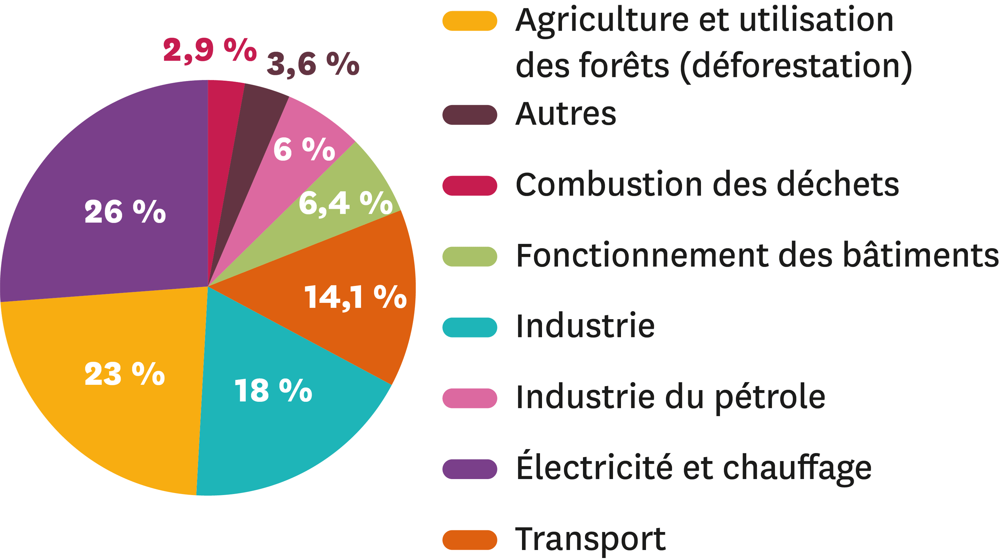
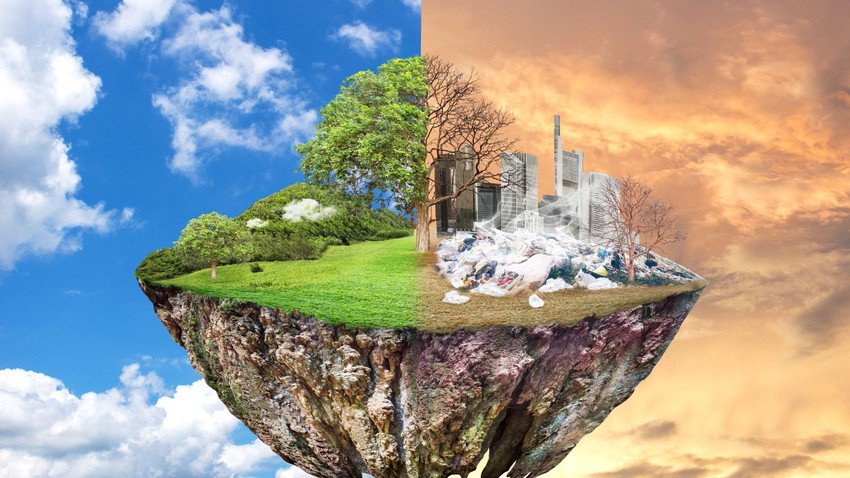
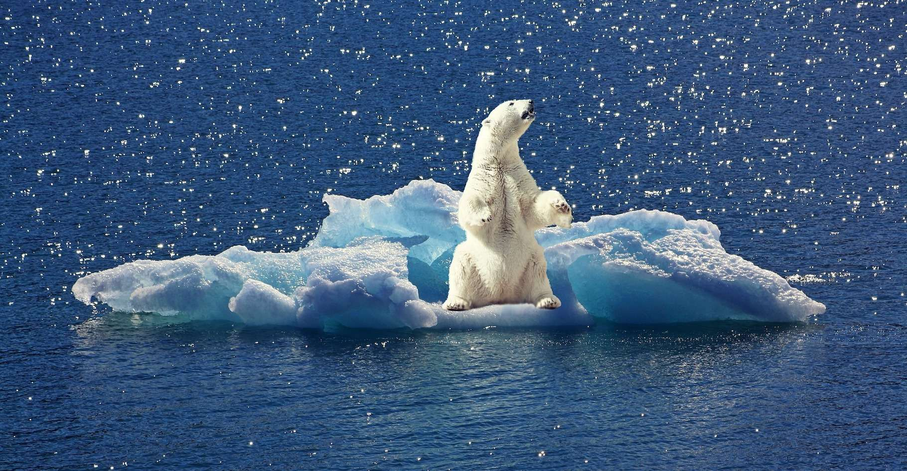

Le GIEC (Groupe d’experts intergouvernemental sur l’évolution du climat) est créé en 1988 avec pour objectif d’étudier l’évolution du phénomène de réchauffement climatique et ses conséquences.Les modèles du GIEC ont permis d’établir les causes du réchauffement climatique, c’est-à-dire de savoir d’où provient ce réchauffement climatique, ce qui le provoque. Grâce aux scientifiques, on sait que ce sont principalement les émissions de gaz à effet de serre d’origine humaine qui influencent le climat. Mais d’où viennent ces émissions ? Principalement, c’est la production d’énergie (électricité, chauffage) et de carburant pour les transports (principalement les voitures, mais aussi en partie l’aviation ou le transport maritime) qui causent le réchauffement climatique. Ensuite arrivent la gestion des territoires et notamment l’agriculture, mais aussi l’élevage.
Les villes contribuent significativement aux changements climatiques. Selon ONU-Habitat, les villes comptent pour 78 % de la consommation énergétique mondiale et produisent plus de 60 % des émissions de gaz à effet de serre. Pourtant, elles représentent moins de 2 % de la surface de la Terre.La forte densité de personnes dépendant des combustibles fossiles rend les populations urbaines très vulnérables aux effets des changements climatiques. La diminution du nombre d’espaces verts ne fait qu’aggraver le problème. La déforestation au profit d’exploitations agricoles, de pâturages ou autre, rejette également des émissions de gaz à effet de serre, puisque les arbres, lorsqu’ils sont abattus, libèrent le carbone qu’ils ont stocké. La destruction des forêts, qui absorbent le dioxyde de carbone, limite également la capacité de la nature à empêcher les émissions de gaz d’entrer dans l’atmosphère.La production industrielle rejette des émissions de gaz, essentiellement du fait de son utilisation des combustibles fossiles pour produire l’énergie nécessaire à la fabrication de matériaux tels que le ciment, le fer, l’acier, l’électronique, le plastique et le textile, ainsi que d’autres biens. L’exploitation minière et d’autres processus industriels produisent également des émissions.
Dans la quasi-totalité des régions terrestres, les journées très chaudes et les vagues de chaleur se multiplient. L'année 2020 a été l’une des plus chaudes jamais enregistrées. La hausse des températures provoque une augmentation des maladies liées à la chaleur et peut rendre le travail et les déplacements plus difficiles. En outre, les incendies de forêt démarrent plus facilement et se propagent plus vite lorsque les températures sont plus élevées. Les changements de température occasionnent à leur tour des changements dans les précipitations. Cela se traduit par des tempêtes plus violentes et plus fréquentes, susceptibles de provoquer des inondations et des glissements de terrain, de détruire des maisons et des communautés, et de coûter des milliards de dollars.
De plus en plus de régions sont confrontées à une pénurie d’eau. Les sécheresses peuvent provoquer des tempêtes de sable et de poussière destructrices, capables de déplacer des milliards de tonnes de sable à travers les continents. Avec la désertification, les terres cultivables voient également leur surface se réduire. Aujourd’hui, de nombreuses personnes sont exposées au risque de manquer d’eau. Les océans absorbent une grande partie de la chaleur due au réchauffement de la planète. Cela a pour effet de provoquer la fonte des calottes glaciaires et l’élévation du niveau des mers, menaçant ainsi les communautés côtières et insulaires. Les océans absorbent également le dioxyde de carbone contenu dans l’atmosphère. Or, l’augmentation du dioxyde de carbone rend l’océan plus acide, ce qui met en danger la vie marine.
Les changements climatiques menacent la survie des espèces sur terre et dans les océans. Plus les températures sont élevées, plus les risques encourus augmentent. Les incendies de forêt, les conditions météorologiques extrêmes, les espèces nuisibles et les maladies comptent parmi les nombreuses menaces liées aux changements climatiques. Si certaines espèces sont en mesure de se déplacer et de survivre, d’autres ne peuvent pas en faire autant.